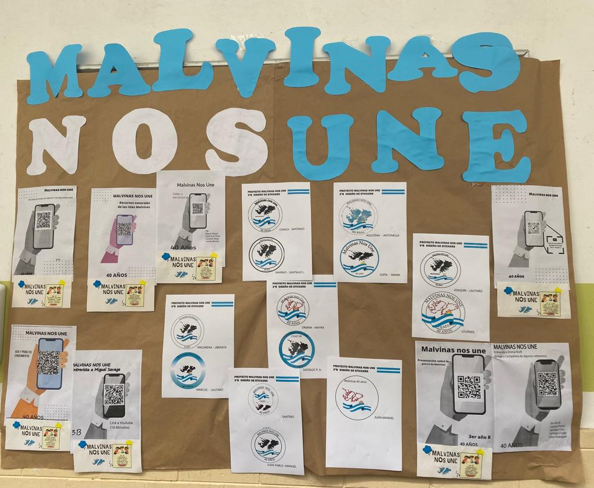
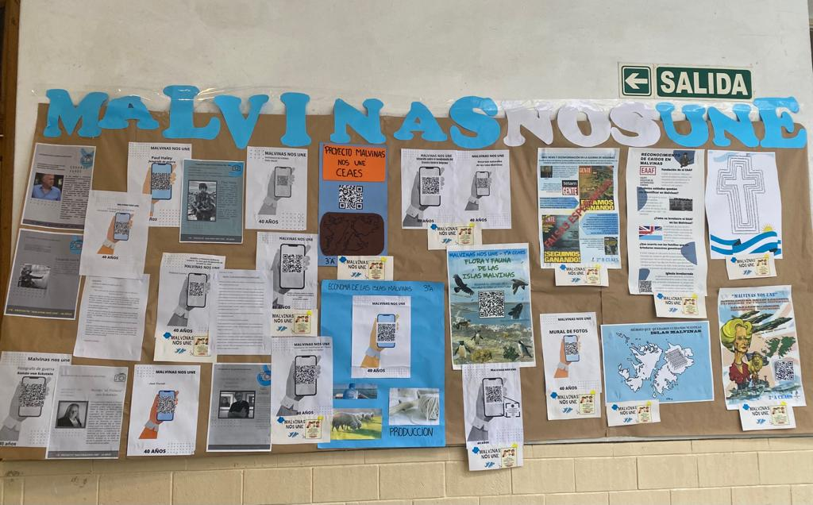

PROPUESTA DE TRABAJO INTERDISCIPLINARIO NIVEL MEDIO Y POSPRIMARIO
“A 40 AÑOS DE LA GUERRA DE MALVINAS”
Discurso a cargo del Prof. Fernando Héctor Fariña
El presente proyecto propone abordar de forma integral, a través de diferentes ejes temáticos y
conceptuales, en un ejercicio de memoria colectiva para poner en verdadero relieve la importancia
que tiene para todos los argentinos la “Cuestión Malvinas”.
Han transcurrido 40 años desde esta Guerra que forma parte de nuestra historia reciente y que construye nuestra identidad como Nación.
Haciendo un poco de Historia, recordamos que en el año 1817 Argentina llevó adelante la ocupación
definitiva de las Islas luego de independizarse de España en 1816 pero en el año 1833 Inglaterra tomó por la fuerza el
gobierno de las Islas Malvinas con el pretexto de haberlas descubierto y expulsó a las autoridades criollas, allí
asentadas. Desde entonces Argentina ha reclamado su soberanía sobre las Islas antes los foros internacionales.
150 años después, la Junta Militar, que conformaba el gobierno de facto en 1982, declaró la Guerra a Inglaterra
para recuperar las Islas y se desató así una inexplicable y dolorosa guerra que duró 74 días y que dejó como resultado
650 muertos y una herida en la sociedad que aún hoy no ha sido cerrada.
En estos 40 años hemos afianzado nuestro sistema democrático y con ello el reconocimiento y el ejercicio de los
derechos de nuestros habitantes y ciudadanos.
Por eso hoy, Argentina busca a través de la vía diplomática, que es la forma más adecuada para resolver conflictos
entre Estados, recuperar su soberanía sobre las Islas Malvinas contando con el apoyo de gran parte de la comunidad internacional.
Conmemoremos entonces a todos aquellos que dieron su vida por la Patria y a aquellos que lucharon en la Guerra que es
la mejor forma de brindarles respeto y reconocimiento por la sociedad en su conjunto. Y defendamos siempre nuestra Soberanía Nacional.
Presupuesto de tiempo:
2 de abril: lanzamiento de la propuesta en el acto que se realizará el día 4 de abril de 2022
14 de junio: presentación de trabajos.
Ejes para abordar:
Flora y fauna de las islas (Biología) - CURSO 1RO “A” (Profesor a cargo: Claudia Iarlori)
Formación geológica, recursos naturales, actividades económicas, ubicación estratégica de las islas (Geografía – Economía) - CURSO 3RO“A” (Profesores Germán Cattalín y Gladys Centurión)
Identidad nacional: Malvinización de la sociedad (FEyC - Historia) - CURSO 4TO “B” (Profesores a cargo: Luciano Pagano y Griselda Orellano)
Antecedentes históricos y jurídicos, reclamaciones ante la ONU (Historia – Derecho) - CURSO 5TO “A” (Profesores a cargo: Sebastián Croxatto y Luciano Pagano)
Malvinas en el arte, la fotografía, el cine, la música y la literatura (Plástica – Lengua y Literatura) - CURSO 1RO “B” (Profesores a cargo: Belén Salaberry y Fernando Fariña)
Prensa gráfica, radio y televisión (Historia –Postprimario ) - CURSO 2DO “B” Y POSTPRIMARIO 1 (Profesores a cargo: David Carullo y Vanesa Batalla Troche)
Testimonios y crónicas: historia oral y escrita (Historia – Lengua y Literatura) - CURSO 3RO B (Profesores a cargo: Emma Riolfi y María Ana Rago)
La Guerra de 1982 (Historia/Inglés) - CURSO 2DO “A” (Profesores a cargo: David Carullo y Florencia Bazzini)
La Fe como superación de los conflictos (Catequesis) - CURSO 5TO “B” (Profesor a cargo: Carlos Pérez)
Identificación de soldados caídos en Malvinas (Catequesis/FEyC) - CURSO 4TO “A” (Profesores a cargo: Ana Inés Rodríguez y David Carullo)
Visita del Papa Juan Pablo a la Argentina “Mensajero de la Paz” (Catequesis) - CURSOS 5TO “A” Y POSTRIMARIO 2 (Profesores a cargo: Carlos Pérez y Claudia Aráoz)

